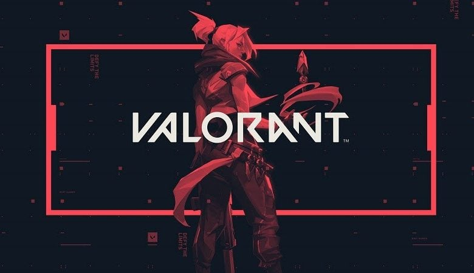

Valorant
Dica de jogo 2023
Misture o seu estilo e experiência em um cenário global e competitivo. Você terá 13 rodadas para atacar e defender com disparos certeiros e habilidades táticas. Com apenas uma vida por rodada, você deve pensar mais rápido que o oponente se quiser sobreviver. Encare inimigos nos modos Competitivo e Sem Ranque, além da Disputa da Spike e do Mata-Mata!